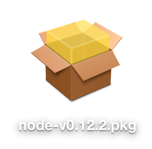

Se trata de un Framework que nos permite crear aplicaciones Javascript que se ejecutan en servidor. Grunt necesita Node.js para poder ejecutarse
Para instalarlo podemos descargar el instalador de la página web de Node:
Node Package Manager
Mediante NPM podemos instalar diversas aplicaciones basadas en Node. Como por ejemplo Grunt:
$ npm install grunt --save-dev
Grunt se instala a nivel de "proyecto". Cada proyecto tiene un archivo llamado package.json el cual lleva un control de todas las dependencias del proyecto.
{
"name": "example-project",
"version": "0.1.0",
"devDependencies": {
"grunt": "~0.4.1"
}
}
Una vez definidas todas las dependencias en el archivo package.json sólo necesitamos ejecutar un comando para que se instalen todas a la vez:
$ npm install
Cada proyecto puede tener una versión de Grunt diferente. Mediante Grunt CLI instalamos Grunt de forma global y lo ejecutamos a nivel local de proyecto.
Cada proyecto Grunt necesita un archivo de configuración llamado Gruntfile.js
$ npm install -g grunt-cli
La función principal de este archivo de configuración es:
Comenzaremos creando una tarea para que grunt compile Sass cuando se lo indiquemos.
Normalmento los pasos a seguir serán:
Buscaremos en Google "grunt" seguido de lo que queramos automatizar a ver si encontramos algún módulo que haga lo que necesitamos.
De entre los resultados, lo mejor es acceder directamente a la página en github del módulo que queramos.
Para nuestro ejemplo buscaremos "grunt sass"
Instalamos el módulo copiando el comando que nos proporciona la página (omitimos el $).
npm install --save-dev grunt-contrib-sass
"npm" es el comando para ejecutar acciones con el gestor de paquetes de node.js (node package manager).
"install" es la accion que queremos ejecutar
"--save-dev" es una opción extra del comando install que hará que además de instalar el paquete lo agregue a la lista de dependencias en el package.json para que la próxima persona en descargarse el proyecto sepa que módulos necesita para que funcione.
"grunt-contrib-sass" es el paquete que estamos instalando en este momento.
Indicamos a grunt que tiene que cargar el módulo para poder utilizarlo luego con a siguiente línea.
grunt.loadNpmTasks('grunt-contrib-sass');
Configuramos el task de sass para que nos compile el archivo main.scss en main.css. Podemos incluir una opción para especificar el estilo que tendrá el css resultante.
sass: {
dist: {
options: {
style: 'expanded'
},
files: {
'main.css': 'main.scss'
}
}
}
Agregamos nuestro task ('sass') dentro del task default para que se ejecute cuand corremos el comando "grunt" en la terminal.
grunt.registerTask('default', [
'sass'
]);
Organizaremos las carpetas en dos grandes directorios:
clean: {
build: [
'dist'
]
}
autoprefixer: {
options: {
browsers: [
'last 2 versions',
'> 2%',
'ie 8',
'ie 9'
]
},
dist: {
src: 'dist/css/main.css',
dest: 'dist/css/main.css'
}
},
csso: {
compress: {
options: {
report: 'gzip'
},
files: {
'dist/css/main.min.css': ['dist/css/main.css']
}
}
},
pixrem: {
options: {
rootvalue: '100%'
},
dist: {
src: 'dist/css/main.min.css',
dest: 'dist/css/main.min.css'
}
},
concat: {
dist: {
src: [
'src/js/components/**/*.js'
],
dest: 'dist/js/main.js'
}
},
uglify: {
main: {
files: {
'dist/js/main.min.js': 'dist/js/main.js'
}
}
},
copy: {
main: {
expand: true,
cwd: 'src/',
src: '**/*.html',
dest: 'dist/',
filter: 'isFile',
},
},
imagemin: {
dist: {
files: [{
expand: true,
cwd: 'src/',
src: ['**/*.{png,jpg,gif}'],
dest: 'dist/'
}]
}
},
svgmin: {
dist: {
expand: true,
cwd: 'src/img',
src: ['*.svg'],
dest: 'dist/img'
}
},
watch: {
css: {
files: ['src/scss/**/*.scss'],
tasks: ['sass', 'autoprefixer', 'csso', 'pixrem'],
},
js: {
files: ['src/js/components/**/*.js'],
tasks: ['concat', 'uglify'],
},
html: {
files: ['src/**/*.html'],
tasks: ['copy'],
options: {
livereload: true,
},
},
svg: {
files: ['src/**/*.svg'],
tasks: ['svgmin'],
options: {
livereload: true,
},
},
img: {
files: ['src/**/*.{png,jpg,gif}'],
tasks: ['imagemin'],
options: {
livereload: true,
},
},
},
browserSync: {
dev: {
bsFiles: {
src : [
'dist/css/*.css',
'dist/js/*.js',
'dist/*.html'
]
},
options: {
watchTask: true,
server: 'dist'
}
}
},